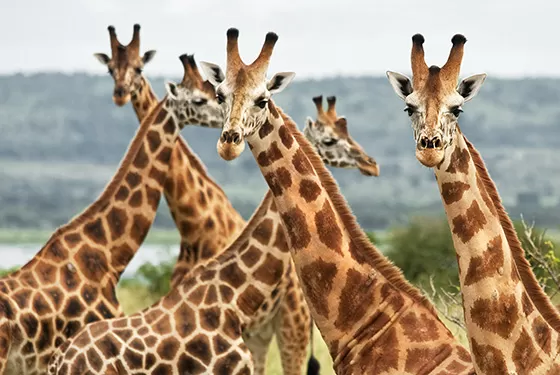

Ação Girafffa: Protegendo a Vida Selvagem Africana
ONG de proteção a vida selvagem na Africa
Bem-vindo à Ação Girafffa, nossa ONG dedicada à preservação da vida selvagem africana. Combatemos ameaças como caça ilegal e perda de habitat para
garantir um futuro sustentável. Promovemos a conscientização e educação para preservar a beleza única e a importância vital da fauna africana. Junte-se
a nós nessa jornada de esperança para coexistência harmoniosa entre humanos e animais.

Nosso Objetivo:
Na Ação Girafffa, nosso objetivo primordial é criar um ambiente sustentável onde humanos e animais coexistam em harmonia. Para alcançar isso, implementamos
estratégias abrangentes de conservação, desde a gestão responsável de áreas protegidas até a promoção de práticas de turismo sustentável.
Ao combater ativamente as causas subjacentes à diminuição das populações de vida selvagem, buscamos não apenas proteger as espécies ameaçadas, mas também
fortalecer ecossistemas inteiros. Nosso compromisso vai além do presente, visando deixar um legado duradouro para as gerações futuras, onde a beleza e a
diversidade da vida selvagem africana são apreciadas e preservadas. Junte-se a nós nessa missão vital pela coexistência sustentável.